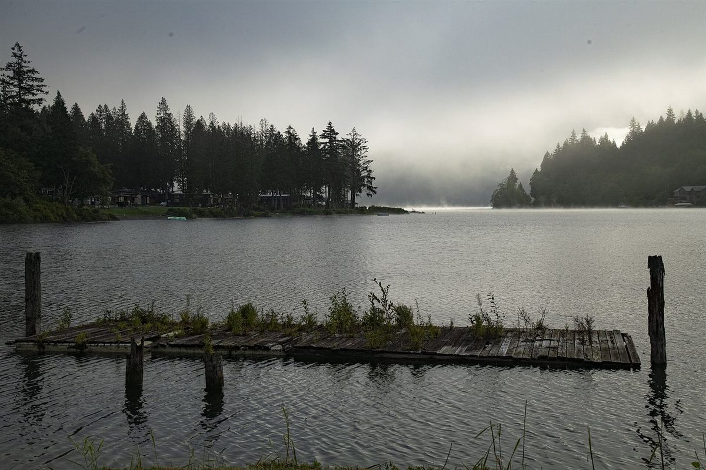
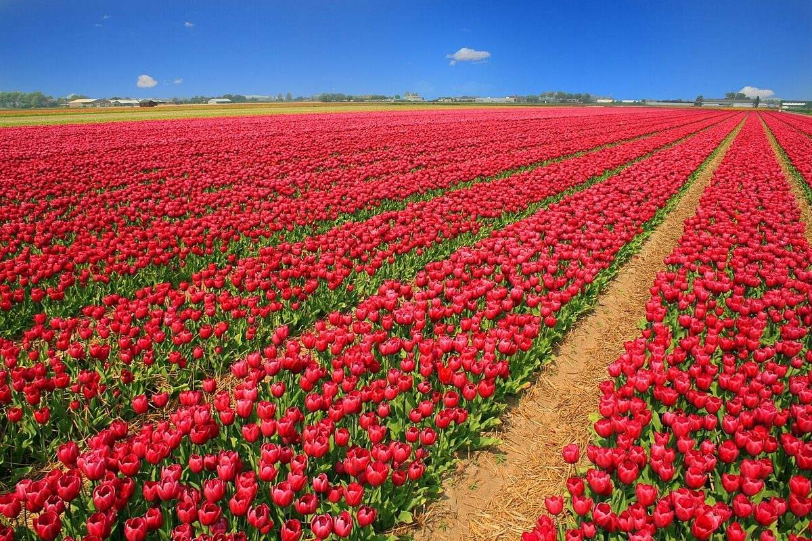
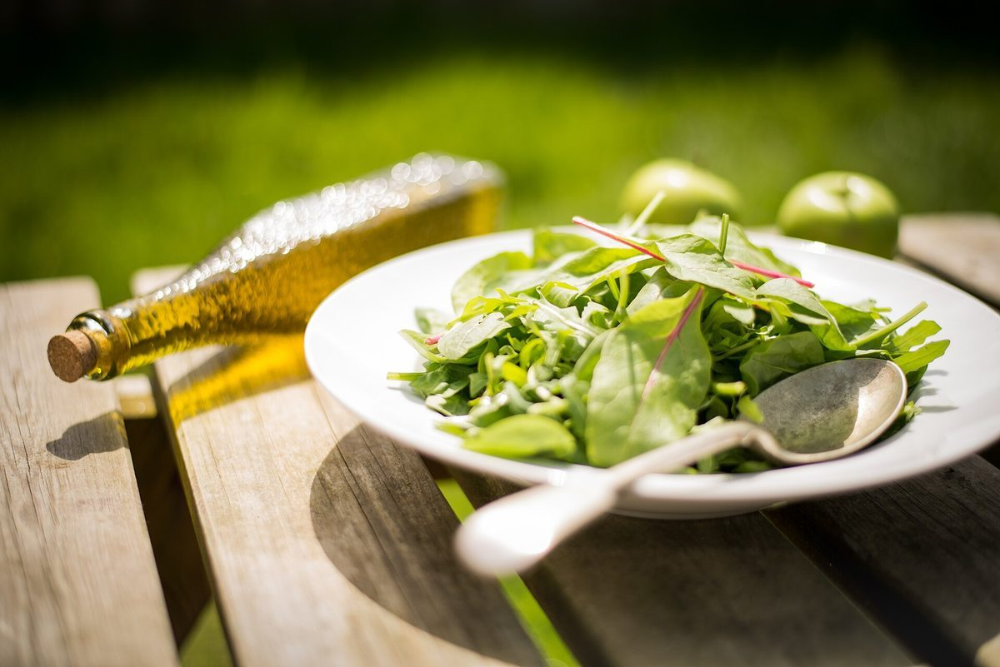
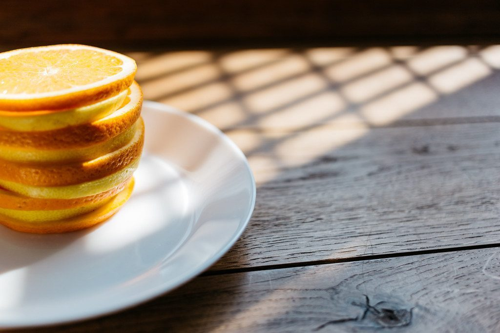
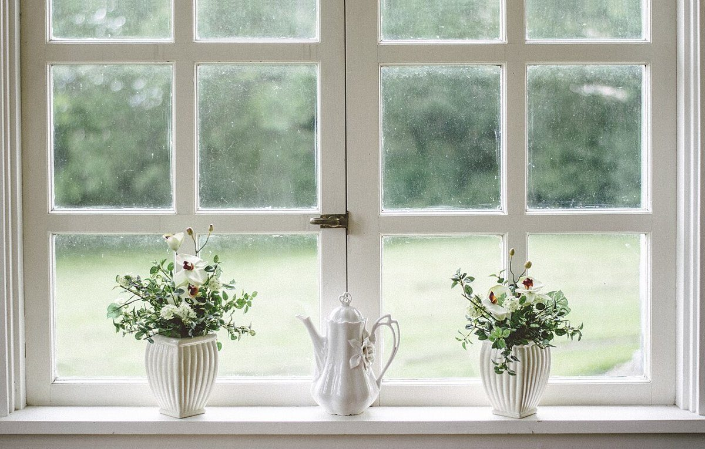

制作側の連想
ルーペの部位を、配置図にしてみる
ルーペ(手に持つ拡大鏡)の部位を図にしたもので、制作側の連想です。お店の理念・由来とは無関係で、実際の製品の仕様を示すものでもありません。 六つの部位に番号をふり、上の図と並べています。
凡例
六つの部位
- 1レンズ(中央の凸レンズ)丸いガラスやプラスチックの板で、中央がふくらんでいる。のぞくと、ものが大きく見える部分。
- 2レンズ枠(リム)レンズをぐるりと囲む輪。レンズを落とさず、縁を守る役目をもつ。
- 3ジョイント(枠と柄のつなぎ目)丸い枠の下から柄へとすぼまる部分。枠と柄を一つにつなぐ。
- 4柄(シャフト)枠から下へ伸びる細い軸。持ったときに枠をレンズの向きに保つ。
- 5グリップ(握り)手に持つ太めの部分。表面に横の溝があり、すべりにくい形にしてある。
- 6吊り穴(柄の端の穴)柄の下端にあいた小さな穴。ひもを通して下げておけるようにする。
写真(イメージ)
写真(イメージ)





写真はイメージです。お店のものではありません。
ご案内
お店のこと(確認できたものだけ)
| 所在地 | 〒665-0003 兵庫県宝塚市湯本町１−３４ |
|---|---|
| 電話 | 準備中 |
| 営業時間 | 準備中 |
| 定休日 | 準備中 |
| ご予約 | 準備中 |
| 駐車場 | 準備中 |
| SNS | Instagram @cafeholidays_takarazuka |